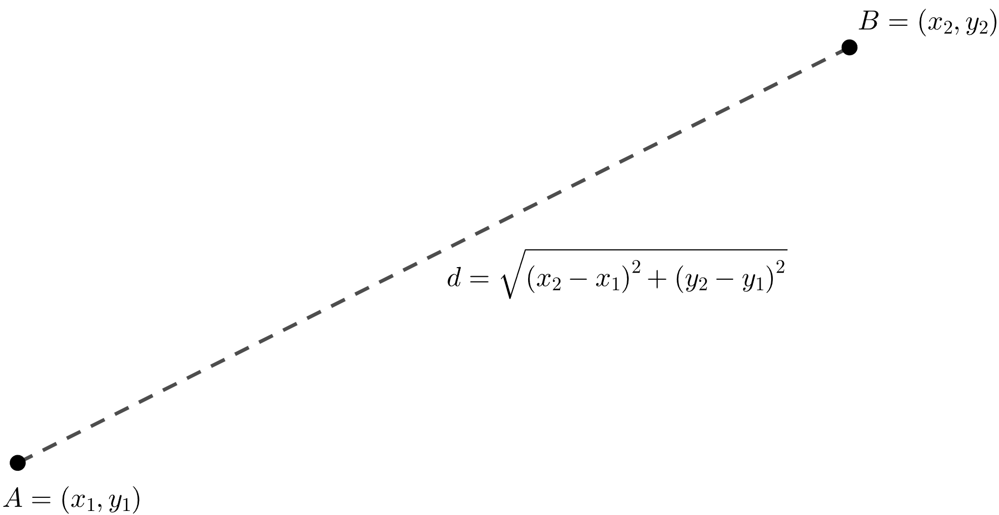

Theorem 1.3.5. The Distance Formula.
Let \(A = (x_1, y_1)\) and \(B = (x_2, y_2)\) be any two points on the coordinate plane. The distance \(d\) between \(A\) and \(B\) is given by the formula
\begin{equation*}
d = \sqrt{(x_2 - x_1)^2 + (y_2 - y_1)^2}
\end{equation*}
